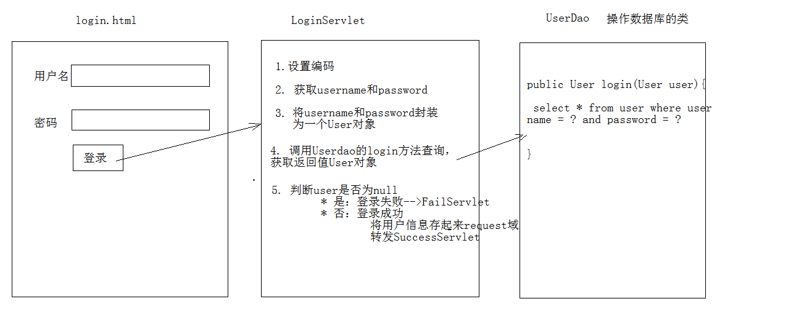
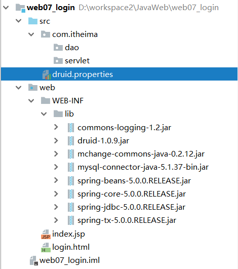
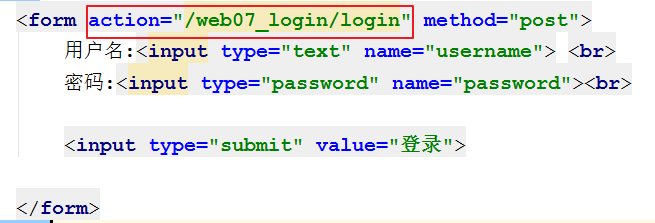
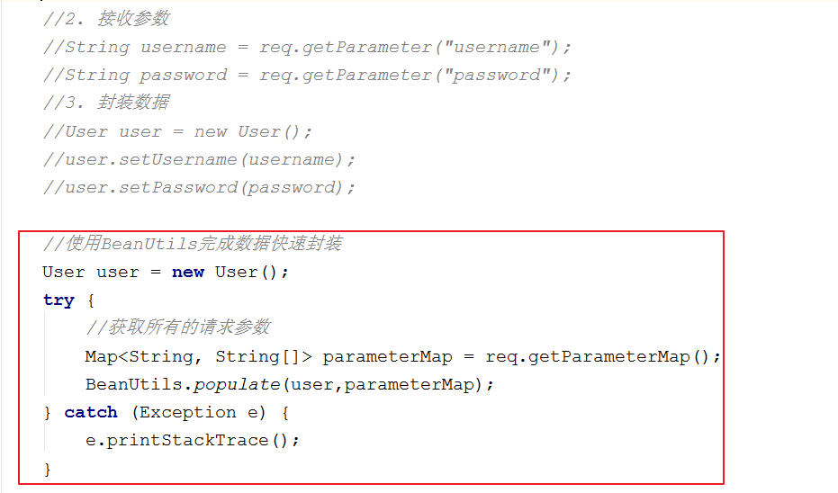

一. 今日目标二. 今日内容(一) HTTP协议请求部分1. HTTP协议概述2. HTTP协议请求消息请求行请求头请求体(二) 请求对象(Request)1. request对象和response对象2. request对象继承体系结构3. request功能获取请求行数据方法示例获取请求头数据示例:获取所有请求头信息示例:获取user-agent头示例:获取referer头获取请求体数据示例:字符输入流示例:字节输入流获取请求参数示例乱码问题请求转发步骤：特点：示例共享数据示例获取ServletContext示例(三) 案例：用户登录1. 需求分析3. 环境准备4. 步骤分析5. 代码优化
x概念：Hyper Text Transfer Protocol 超文本传输协议* 传输协议：定义了，客户端和服务器端通信时，发送数据的格式* 特点：1. 基于TCP/IP的高级协议2. 默认端口号:803. 基于请求/响应模型的:一次请求对应一次响应4. 无状态的：每次请求之间相互独立，不能交互数据* 历史版本：* 1.0：每一次请求响应都会建立新的连接* 1.1：复用连接
请求部分可以分成三块,
请求行,请求头,请求体xxxxxxxxxxPOST /login.html HTTP/1.1Host: localhostUser-Agent: Mozilla/5.0 (Windows NT 6.1; Win64; x64; rv:60.0) Gecko/20100101 Firefox/60.0Accept: text/html,application/xhtml+xml,application/xml;q=0.9,*/*;q=0.8Accept-Language: zh-CN,zh;q=0.8,zh-TW;q=0.7,zh-HK;q=0.5,en-US;q=0.3,en;q=0.2Accept-Encoding: gzip, deflateReferer: http://localhost/login.htmlConnection: keep-aliveUpgrade-Insecure-Requests: 1username=zhangsan
xxxxxxxxxx请求方式 请求url 请求协议/版本POST /login.html HTTP/1.1
请求方式有哪些?常用的有哪些?有什么区别?
xxxxxxxxxxHTTP协议有7中请求方式，常用的有2种* GET：1. 请求参数在请求行中，在url后。2. 请求的url长度有限制的3. 不太安全* POST：1. 请求参数在请求体中2. 请求的url长度没有限制的3. 相对安全
客户端浏览器告诉服务器一些信息
请求头名称: 请求头值
常见的请求头
xxxxxxxxxx1. User-Agent：浏览器告诉服务器，我访问你使用的浏览器版本信息* 可以在服务器端获取该头的信息，解决浏览器的兼容性问题2. Referer：http://localhost/login.html* 告诉服务器，我(当前请求)从哪里来？* 作用： 防盗链 , 统计工作
请求体也叫请求正文 , 封装
POST请求消息的请求参数(GET方式没有请求体)
xxxxxxxxxx一个请求发送到服务器,Tomcat接收到请求之后,会为这个请求创建`request`和`response`对象1. request和response对象是由服务器创建的。我们来使用它们2. request对象是来获取请求消息，response对象是来设置响应消息
xxxxxxxxxxServletRequest -- 接口| 继承HttpServletRequest -- 接口| 实现org.apache.catalina.connector.RequestFacade 类(tomcat)
请求行 : 请求方式 请求路径 协议版本 ,例如:
GET /day14/demo1?name=zhangsan HTTP/1.1
返回值 方法名称 方法介绍 StringgetMethod() 获取请求方式,例如: GET/POSTStringgetContextPath() 获取虚拟目录,例如: /day14StringgetProtocol() 取协议及版本,例如: HTTP/1.1StringgetRemoteAddr() 获取客户机的IP地址,例如: 192.168.26.10StringgetServletPath() 获取客户机地址,例如: /demo1StringgetQueryString() 获取get方式请求参数列表,例如: name=zhangsan&password=123StringgetRequestURI() 获取请求URI(统一资源标识符),例如: /day14/demo1StringBuffergetRequestURL() 获取请求URL(统一资源定位符),例如: http://localhost/day14/demo1
xxxxxxxxxx/** * 演示Request对象获取请求行数据 */("/requestDemo1")public class RequestDemo1 extends HttpServlet { protected void doGet(HttpServletRequest request, HttpServletResponse response) throws ServletException, IOException { //1. 获取请求方式 ：GET String method = request.getMethod(); System.out.println(method); //2.(*)获取虚拟目录：/day14 String contextPath = request.getContextPath(); System.out.println(contextPath); //3. 获取Servlet路径: /demo1 String servletPath = request.getServletPath(); System.out.println(servletPath); //4. 获取get方式请求参数：name=zhangsan String queryString = request.getQueryString(); System.out.println(queryString); //5.(*)获取请求URI：/day14/demo1 String requestURI = request.getRequestURI(); StringBuffer requestURL = request.getRequestURL(); System.out.println(requestURI); System.out.println(requestURL); //6. 获取协议及版本：HTTP/1.1 String protocol = request.getProtocol(); System.out.println(protocol); //7. 获取客户机的IP地址： String remoteAddr = request.getRemoteAddr(); System.out.println(remoteAddr); }}请求头 : 头名称: 头内容 , 例如 : Referer: http://localhost/login.html
返回值 方法名称 方法介绍 StringgetHeader(String name) 通过请求头的名称获取请求头的值 Enumeration<String>getHeaderNames() 获取所有的请求头名称
xxxxxxxxxx("/requestDemo2")public class RequestDemo2 extends HttpServlet { protected void doGet(HttpServletRequest request, HttpServletResponse response) throws ServletException, IOException { //演示获取请求头数据 //1.获取所有请求头名称 Enumeration<String> headerNames = request.getHeaderNames(); //2.遍历 while(headerNames.hasMoreElements()){ String name = headerNames.nextElement(); //根据名称获取请求头的值 String value = request.getHeader(name); System.out.println(name+"---"+value); } }}user-agent头xxxxxxxxxx("/requestDemo2")public class RequestDemo2 extends HttpServlet { protected void doGet(HttpServletRequest request, HttpServletResponse response) throws ServletException, IOException { //1.演示获取请求头数据:user-agent String agent = request.getHeader("user-agent"); //判断agent的浏览器版本 if(agent.contains("Chrome")){ //谷歌 System.out.println("谷歌来了..."); }else if(agent.contains("Firefox")){ //火狐 System.out.println("火狐来了..."); } }}referer头xxxxxxxxxx("/requestDemo4")public class RequestDemo4 extends HttpServlet { protected void doGet(HttpServletRequest request, HttpServletResponse response) throws ServletException, IOException { //演示获取请求头数据:referer String referer = request.getHeader("referer"); System.out.println(referer);//http://localhost/day14/login.html //防盗链 if(referer != null ){ if(referer.contains("/day14")){ //正常访问 // System.out.println("播放电影...."); response.setContentType("text/html;charset=utf-8"); response.getWriter().write("播放电影...."); }else{ //盗链 //System.out.println("想看电影吗？来优酷吧..."); response.setContentType("text/html;charset=utf-8"); response.getWriter().write("想看电影吗？来优酷吧..."); } } }}请求体就是POST请求的参数 : 只有POST请求方式，才有请求体，在请求体中封装了POST请求的请求参数
例如 : username=zhangsan&password=123
返回值 方法名称 方法介绍 BufferedReadergetReader() 获取字符输入流，只能操作字符数据 ServletInputStreamgetInputStream() 获取字节输入流，可以操作所有类型数据,一般用户文件上传,获取到流之后再从流中获取数据再从流对象中拿数据
xxxxxxxxxx("/requestDemo5")public class RequestDemo5 extends HttpServlet { protected void doPost(HttpServletRequest request, HttpServletResponse response) throws ServletException, IOException { //获取请求消息体--请求参数 //1.获取字符流 BufferedReader br = request.getReader(); //2.读取数据 String line = null; while((line = br.readLine()) != null){ System.out.println(line); } }}xxxxxxxxxx("/requestDemo5")public class RequestDemo5 extends HttpServlet { protected void doPost(HttpServletRequest request, HttpServletResponse response) throws ServletException, IOException { //获取请求消息体--请求参数 //1.获取字符流 BufferedReader br = request.getReader(); //2.读取数据 String line = null; while((line = br.readLine()) != null){ System.out.println(line); } }}通用方式：不论get还是post请求方式都可以使用下列方法来获取请求参数
返回值 方法名称 方法介绍 StringgetParameter(String name) 根据参数名称获取参数值 username=zsString[]getParameterValues(String name) 根据参数名称获取参数值的数组 hobby=xx&hobby=gameMap<String,String[]>getParameterMap() 获取所有参数的map集合 Enumeration<String>getParameterNames() 获取所有请求的参数名称
xxxxxxxxxx("/requestDemo6")public class RequestDemo6 extends HttpServlet { protected void doPost(HttpServletRequest request, HttpServletResponse response) throws ServletException, IOException { //post 获取请求参数 //根据参数名称获取参数值 String username = request.getParameter("username"); System.out.println(username); System.out.println("----------------"); //根据参数名称获取参数值的数组 String[] hobbies = request.getParameterValues("hobby"); for (String hobby : hobbies) { System.out.println(hobby); } System.out.println("----------------"); //获取所有请求的参数名称 Enumeration<String> parameterNames = request.getParameterNames(); while(parameterNames.hasMoreElements()){ String name = parameterNames.nextElement(); System.out.println(name); String value = request.getParameter(name); System.out.println(value); } System.out.println("----------------"); // 获取所有参数的map集合 Map<String, String[]> parameterMap = request.getParameterMap(); //遍历 Set<String> keyset = parameterMap.keySet(); for (String name : keyset) { //获取键获取值 String[] values = parameterMap.get(name); System.out.println(name); for (String value : values) { System.out.println(value); } } } protected void doGet(HttpServletRequest request, HttpServletResponse response) throws ServletException, IOException { //get 获取请求参数 //根据参数名称获取参数值 String username = request.getParameter("username"); System.out.println("get"); System.out.println(username); }}GET方式
tomcat 8 已经将get方式乱码问题解决了
POST方式:会乱码
在获取参数前，设置request的编码
request.setCharacterEncoding("utf-8");
示例
xxxxxxxxxx("/login")public class LoginServlet extends HttpServlet { protected void doPost(HttpServletRequest req, HttpServletResponse resp) throws ServletException, IOException { //解决post请求乱码问题 req.setCharacterEncoding("utf-8"); //接收参数 String username = req.getParameter("username"); String password = req.getParameter("password"); System.out.println(username+" "+password); }}一种在服务器内部的资源跳转方式
xxxxxxxxxx1. 通过request对象获取请求转发器对象：* RequestDispatcher getRequestDispatcher(String path)2. 使用RequestDispatcher对象来进行转发：* forward(ServletRequest request, ServletResponse response)
xxxxxxxxxx1. 浏览器地址栏路径不发生变化2. 只能转发到当前服务器内部资源中。3. 转发是一次请求
xxxxxxxxxx("/requestDemo8")public class RequestDemo8 extends HttpServlet { protected void doPost(HttpServletRequest request, HttpServletResponse response) throws ServletException, IOException { //1. 获取请求转发器对象 //RequestDispatcher requestDispatcher = request.getRequestDispatcher("/requestDemo9"); //2. 使用转发器对象来进行转发 //requestDispatcher.forward(request,response); //存储数据到request域中 request.setAttribute("msg","hello"); request.getRequestDispatcher("/requestDemo9").forward(request,response); } protected void doGet(HttpServletRequest request, HttpServletResponse response) throws ServletException, IOException { this.doPost(request,response); }}xxxxxxxxxx1. 什么是域对象* 一个有作用范围的对象，可以在范围内共享数据2. request域* 代表一次请求的范围，一般用于请求转发的多个资源中共享数据
| 返回值 | 方法名称 | 方法介绍 |
|---|---|---|
| void | setAttribute(String name,Object obj) | 存储数据 |
| Object | getAttitude(String name) | 通过键获取值 |
| void | removeAttribute(String name) | 通过键删除数据 |
xxxxxxxxxx("/requestDemo9")public class RequestDemo9 extends HttpServlet { protected void doPost(HttpServletRequest request, HttpServletResponse response) throws ServletException, IOException { //获取数据 Object msg = request.getAttribute("msg"); System.out.println(msg); }}ServletContext是web项目的上下文对象, 服务器启动的时候会为每一个WEB项目创建一个ServletContext对象,这个ServletContext对象中,包含WEB项目的一些信息
返回值 方法名称 方法介绍 ServletContext getServletContext() 获取ServletContext域对象
xxxxxxxxxx("/requestDemo10")public class RequestDemo10 extends HttpServlet { protected void doPost(HttpServletRequest request, HttpServletResponse response) throws ServletException, IOException { ServletContext servletContext = request.getServletContext(); System.out.println(servletContext); }}xxxxxxxxxx1. 编写login.html登录页面 username & password 两个输入框2. 使用Druid数据库连接池技术,操作mysql，day14数据库中user表3. 使用JdbcTemplate技术封装JDBC4. 登录成功跳转到SuccessServlet展示：登录成功！xxx,欢迎您5. 登录失败跳转到FailServlet展示：登录失败，用户名或密码错误

xxxxxxxxxx1. 创建项目，导入html页面，配置文件，jar包2. 准备数据库环境3. 创建包和类 domain utils4. 编写工具类JDBCUtils
1. 创建项目，导入html页面，配置文件，jar包

2. 创建数据库环境
xxxxxxxxxxCREATE DATABASE day14;USE day14;CREATE TABLE USER( id INT PRIMARY KEY AUTO_INCREMENT, username VARCHAR(32) UNIQUE NOT NULL, PASSWORD VARCHAR(32) NOT NULL);3. 创建包cn.itcast.domain,创建类User
xxxxxxxxxxpackage cn.itcast.domain;/** * 用户的实体类 */public class User { private int id; private String username; private String password; public int getId() { return id; } public void setId(int id) { this.id = id; } public String getUsername() { return username; } public void setUsername(String username) { this.username = username; } public String getPassword() { return password; } public void setPassword(String password) { this.password = password; } public String toString() { return "User{" + "id=" + id + ", username='" + username + '\'' + ", password='" + password + '\'' + '}'; }}4. 创建包cn.itcast.util,编写工具类JDBCUtils
xxxxxxxxxxpackage cn.itcast.util;import com.alibaba.druid.pool.DruidDataSourceFactory;import javax.sql.DataSource;import javax.xml.crypto.Data;import java.io.IOException;import java.io.InputStream;import java.sql.Connection;import java.sql.SQLException;import java.util.Properties;/** * JDBC工具类 使用Durid连接池 */public class JDBCUtils { private static DataSource ds ; static { try { //1.加载配置文件 Properties pro = new Properties(); //使用ClassLoader加载配置文件，获取字节输入流 InputStream is = JDBCUtils.class.getClassLoader().getResourceAsStream("druid.properties"); pro.load(is); //2.初始化连接池对象 ds = DruidDataSourceFactory.createDataSource(pro); } catch (IOException e) { e.printStackTrace(); } catch (Exception e) { e.printStackTrace(); } } /** * 获取连接池对象 */ public static DataSource getDataSource(){ return ds; } /** * 获取连接Connection对象 */ public static Connection getConnection() throws SQLException { return ds.getConnection(); }}
xxxxxxxxxx1. 创建包cn.itcast.dao,创建类UserDao,提供login方法2. 编写cn.itcast.web.servlet.LoginServlet类3. 编写FailServlet类(登录失败访问)4. 编写SuccessServlet(登录成功访问)
1. 创建包cn.itcast.dao,创建类UserDao,提供login方法
xxxxxxxxxxpackage com.itheima.dao;import com.itheima.bean.User;import com.itheima.utils.JdbcUtils;import org.springframework.jdbc.core.BeanPropertyRowMapper;import org.springframework.jdbc.core.JdbcTemplate;import java.util.List;public class UserDao { //创建jdbc模板 private JdbcTemplate jt = new JdbcTemplate(JdbcUtils.getDataSource()); /** * 用户登录操作 * @param user 封装的用户对象 * @return 登录成功的用户对象 登录失败返回null */ public User login(User user){ String sql = "select * from user where username = ? and password = ? "; User loginedUser = jt.queryForObject(sql, new BeanPropertyRowMapper<User>(User.class), user.getUsername(), user.getPassword()); return loginedUser; }}2. 编写cn.itcast.web.servlet.LoginServlet类
xxxxxxxxxxpackage com.itheima.servlet;import com.itheima.bean.User;import com.itheima.dao.UserDao;import javax.servlet.ServletException;import javax.servlet.annotation.WebServlet;import javax.servlet.http.HttpServlet;import javax.servlet.http.HttpServletRequest;import javax.servlet.http.HttpServletResponse;import java.io.IOException;/** * 用户登录 */("/login")public class LoginServlet extends HttpServlet { protected void doGet(HttpServletRequest req, HttpServletResponse resp) throws ServletException, IOException { doPost(req, resp); } protected void doPost(HttpServletRequest req, HttpServletResponse resp) throws ServletException, IOException { //1. 解决中文乱码问题 req.setCharacterEncoding("utf-8"); //2. 介绍参数 String username = req.getParameter("username"); String password = req.getParameter("password"); //3. 封装数据 User user = new User(); user.setUsername(username); user.setPassword(password); //4. 调用dao完成登录操作 UserDao userDao = new UserDao(); User loginedUser = userDao.login(user); //5. 根据结果响应数据 //登录失败 if(loginedUser==null){ req.getRequestDispatcher("/failServlet").forward(req,resp); return ; } //登录成功 //存储数据 req.setAttribute("user",user); //转发到成功页面 req.getRequestDispatcher("/successServlet").forward(req,resp); }}7. 编写FailServlet类(登录失败访问)
xxxxxxxxxxpackage com.itheima.servlet;import javax.servlet.ServletException;import javax.servlet.http.HttpServlet;import javax.servlet.http.HttpServletRequest;import javax.servlet.http.HttpServletResponse;import java.io.IOException;("/failServlet")public class FailServlet extends HttpServlet { protected void doGet(HttpServletRequest req, HttpServletResponse resp) throws ServletException, IOException { doPost(req, resp); } protected void doPost(HttpServletRequest req, HttpServletResponse resp) throws ServletException, IOException { //给页面写一句话 //设置编码 resp.setContentType("text/html;charset=utf-8"); //输出 resp.getWriter().write("登录失败，用户名或密码错误"); }}8. 编写SuccessServlet(登录成功访问)
xxxxxxxxxxpackage com.itheima.servlet;import com.itheima.bean.User;import javax.servlet.ServletException;import javax.servlet.http.HttpServlet;import javax.servlet.http.HttpServletRequest;import javax.servlet.http.HttpServletResponse;import java.io.IOException;("/successServlet")public class SuccessServlet extends HttpServlet { protected void doGet(HttpServletRequest req, HttpServletResponse resp) throws ServletException, IOException { doPost(req, resp); } protected void doPost(HttpServletRequest req, HttpServletResponse resp) throws ServletException, IOException { //设置编码 resp.setContentType("text/html;charset=utf-8"); //获取request域中共享的user对象 User user = (User) req.getAttribute("user"); //登录失败 if(user == null){ //输出 resp.getWriter().write("您还未登录,请先<a href='/web07_login/login.html'>登录</a>"); return ; } //登录成功 resp.getWriter().write("登录成功！"+user.getUsername()+",欢迎您"); return ; }}8. 修改login.html中form表单的action路径

表单路径一般为:
虚拟目录+Servlet的资源路径
使用BeanUtils工具类，简化数据封装(掌握)

要求：
xxxxxxxxxx1. 类必须被public修饰2. 必须提供空参的构造器3. 成员变量必须使用private修饰4. 提供公共setter和getter方法
常用方法：
| 返回值 | 方法名称 | 方法介绍 |
|---|---|---|
| void | setProperty(Object bean,String name,Object value) | 设置属性值 |
| Object | getProperty(Object bean,String name) | 获取属性值 |
| void | populate(Object obj , Map map) | 将map集合的键值对信息，封装到对应的JavaBean对象中 |
示例
xxxxxxxxxxpublic class BeanUtilsTest { public void test(){ User user = new User(); try { BeanUtils.setProperty(user,"hehe","male"); System.out.println(user); String gender = BeanUtils.getProperty(user, "hehe"); System.out.println(gender); } catch (IllegalAccessException e) { e.printStackTrace(); } catch (InvocationTargetException e) { e.printStackTrace(); } catch (NoSuchMethodException e) { e.printStackTrace(); } }}